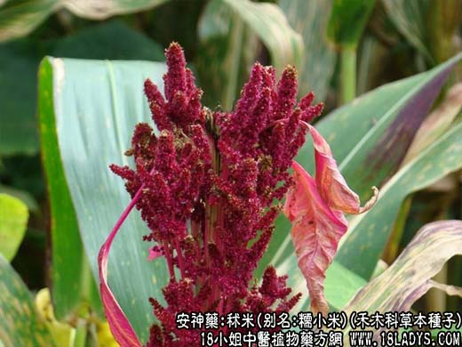

【中药概述】
秫米，别名：糯小米、黏粟、糯粟、黄糯，为禾木科草本植物小米的成熟种子。甘，微寒。归肺、胃、大肠经。
和胃安神：用于脾胃虚弱，或胃失安和引起的夜寐不安，常配半夏同用，如（《内经》半夏秫米汤：半夏，秫米）治胃不和，夜不得眠。
【药效鉴别】
本品有和胃安眠作用，即所谓“胃不和则卧不安”。秫米与半夏同用，一泻一补，一升一降，具有调和脾胃、舒畅气机的作用。
【化学成分】
含维生素B1、B2、烟酸、蛋白质、脂肪，碳水化合物77％、支链淀粉等。
【用量用法】
10——25g，水煎服，或入剂。
本文解释权归中药名称大全，本文地址https://www.daquan.com/post/1968.html